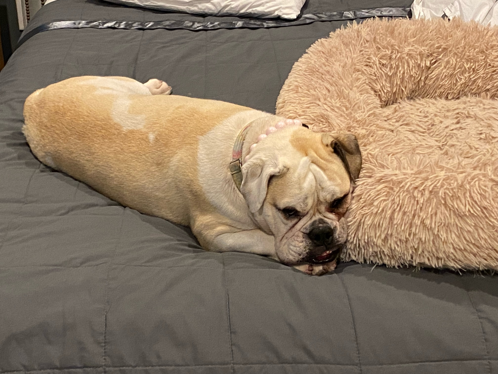
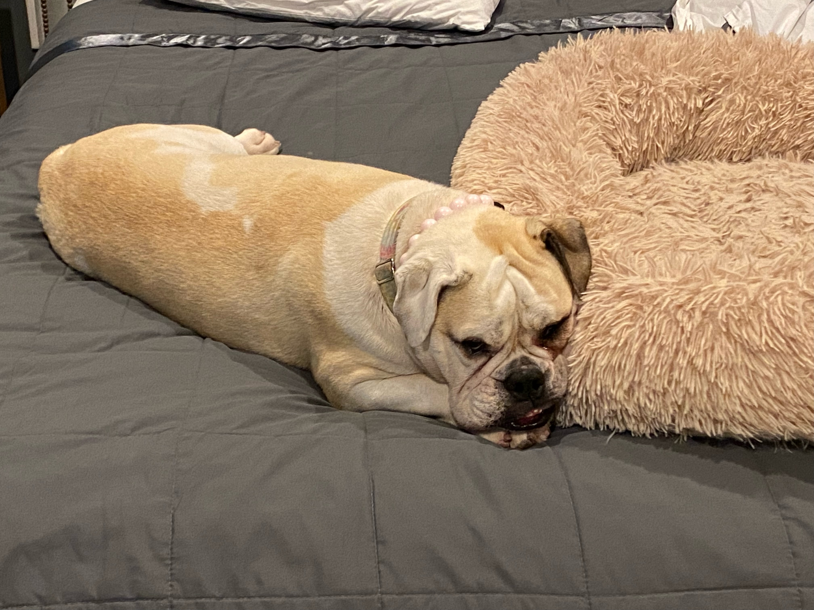

Meet My Bulldog Charlotte

 


When I was in eighth grade we had two dogs, Joey and Chase. We decided we needed another dog and my brother really was a proponent for a bulldog because of what he had seen online. After an hour long trip to Pennsylvania, our parents surprised us and we got to choose a puppy from a litter. The dogs name was Scarlett, and we changed her name to Charlotte.
Currently Charlotte is six years old and loves to take naps and go on walks. She sometimes sleeps upside down on her back and will snore really loudly. Like Bentley and Finn, she is an obnoxious younger sister to her older senior brother Chase and is an attention hog, but she is also really sweet and loves her brother. Charlotte inspired our love for bulldogs as a family and why we follow other social media accounts of bulldogs. Since getting her, we did get another bulldog puppy Finn, but Charlotte and Finn did not get along so we had to get rid of Finn and send him to a different home :(.
Charlotte's favorite toy is her Tiger but she will really play with anything. Whenever a package comes to the house, she loves to open it and inspect it to make sure it's safe for us to use first. Then, she will often trot away with the box or whatever was inside the package and make her chase us to get it. If you're not careful when she's playful, she'll sneak up on you and lightly attack you, a hunting dog trait even though she's anything but a hunter in breed.
Quick facts
- Charlotte's second favorite toys are empty gallon milk jugs.
- Charlotte has come up to visit Syracuse before.
- Charlotte snores loudly when she sleeps.
- Charlotte tore both of her ACLs, but has since made a full recovery.
- Charlotte had two brindle bulldog siblings.
- Charlotte loves the snow.
- Charlotte loves back scratches.
- Charlotte does not like bananas.